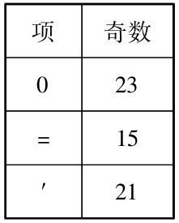

数学家总是以他们的怪癖闻名于世．电影及文学作品《美丽的心灵》描述了纳什（John Forbes Nash）在麻省理工学院（MIT）以及普林斯顿大学时的种种古怪行径．虽然纳什在麻省理工学院是一个最古怪的数学家，但他却不是普林斯顿的最古怪数学家．普林斯顿最古怪数学家这个荣耀无疑当归于K．哥德尔这位跨时代的最伟大的数理逻辑学家，他的确是个极为神经错乱的人．他的这个大脑，既有能力证明现代数学的最为深刻的结果，却又终生患有多疑病症：他总是看见每扇门背后都隐藏着阴谋．
哥德尔于1906年4月8日生于玛拉维亚的布尔诺（Brno，Moravia），它以前是奥匈帝国的一个省，现在则属于捷克共和国．他是鲁道夫和玛利安那·哥德尔家族的两个儿子中的第二个，这个家族属于基督新教派的德国族裔．哥德尔家族的各个分支中没有人曾表现出在数学或科学上的杰出才智，而哥德尔却展示了这种才智．
哥德尔快速地通过了他的早期教育，只花了4年就完成了相当于学校的前8年教育．他在1918年进入了Realgymnasium（相当于高中）；当时正值捷克斯洛伐克在一次世界大战后成了一个独立的国家．哥德尔在他的全部学校教育中几乎总是得到最高分，有点讽刺意味的是，唯一一次没有得到最高分的科目竟是数学！
这些早年的生活并没有留下什么反映出哥德尔日后取得伟大成就的苗头，由于哥德尔属于德国族裔，所以他在1924年随同其兄长鲁道夫到维也纳大学去就不足为奇了；维也纳距布尔诺约75公里，鲁道夫当时在那里学医，哥德尔原本想从事物理学．从他所保留的资料片段（他有收集小物件的癖好）中我们知道哥德尔在维也纳的早期读了许多物理方面的课本．
在1920年代，维也纳容纳了许多知识的发源点．一群自称为“维也纳圈（Vienna Circle）”的科学家和哲学家们每周聚会一次，试图将数学和物理学建立在哲学的基础之上．1926年，哥德尔的导师汉斯·哈恩（Hans Hahn）邀请他参加了这个圈子的聚会．哥德尔去了，无疑这将他的注意力从物理学转向了逻辑学．
1900年，D．希尔伯特这位世界最为显赫的数学家向在巴黎举行的第二届国际数学大会递交了一份演讲稿，在其中他提出了23个问题，“通过对于它们的讨论，或可使科学得到预期的进展”．希尔伯特所提的第一个问题是决定实数连续统的基数，即要解决康托尔的连续统问题（己在第14章中叙述）．希尔伯特的第二个问题是要证明构成数学基础的算术公理的相容性．哥德尔以一种完全出乎意料的回答彻底解决了希尔伯特的第二问题．他也对第一问题取得了第一个有实质性的结果．
哥德尔的资料片段表明他的兴趣从物理学转到逻辑学的确切时间是在1928年的夏秋季，那时他正在寻找他的博士学位论文题目．哥德尔选取了谓词演算的完全性作为他的课题．谓词演算在逻辑学中引进了全称量词（“FOR ALL x”（对所有的））和存在量词（“THERE EXISTS AN x”（存在一个x），使得我们可以对于亚里士多德逻辑进行形式体系化：在该逻辑体系中断言的一个典型示例是“All men are mortal（人总是会死的）”在谓词演算中它被表达为
FOR ALL x（IF x是一个人THEN x一定会死的）．
这个谓词演算的一个典型定理是
THERE EXISTS AN x使得（性质A对于x成立AND性质B对于x成立）
IMPLIES
THERE EXISTS AN x使得（性质A成立）
AND
THERE EXISTS AN x使得（性质B成立）．
哥德尔的博士论文证明了两部分的结果：
哥德尔在1929年上半年在进行他的学位论文写作，即便当时他的母亲与姑母因其父亲在二月的突然逝世而搬来与他的长兄同住也没有使他停止．哥德尔的指导老师们于1929年7月6日通过了他的学位论文，而在7个月之后的1930年2月，他取得了博士学位．
哥德尔的完全性定理使他获得了数学界某种程度的认可，它回答了按照一些杰出数学家以预期的方式所提出的问题．在那个年代奥地利和德国的大学环境中，一篇博士论文和一个博士学位还不足以取得一份大学里的职位，还必须有为获得另外的一个叫做“Habilitationsschrift（取得在大学授课资格）”而做的研究，为了这个Habilitationsschrift哥德尔选了一个更具挑战性的问题：证明作为数学基础的算术公理的相容性，从1930年初起，哥德尔便开始了朝向他的Habilitationsschrift前进的征程，而仅仅到这一年的初秋这个征程便完成了，就像哥伦布那样，他的征程把他带到了比他预定的目标更远的地方．像希尔伯特那样，哥德尔也采用了意大利数学家佩亚诺（Giuseppe Peano）的公理体系作为自然数的形式算术的基础．
在他的Habilitationsschrift中，哥德尔证明了
在他的证明过程中，哥德尔清晰地区分了可证明性（provability）与真实性（truth）．
这就是本书打算要叙述的哥德尔的工作．他的杰出结果建立在两块基石之上．第一块是哥德尔配数法，即将由形式体系中的项构成的每个序列配以自然数值．考虑简单的陈述句
0=0′（0′等于0的后继元，即0+1）．
假定如下的奇数指配给了出现在该陈述中的三个项：

于是数
223*315*523*721
唯一地表达了项的序列0=0′（从字面上看，它说的是，第一和第三项为“0”，第二项为“=”，而第四项为“′”）．然后哥德尔表明了如何在形式体系内部识别有效证明的哥德尔数．
哥德尔的不完全性定理的第二块基石是陈述句“这个陈述句是不可证明的”的形式化翻版，这个陈述句断言了它自身的不可证明性．这是一个可以追溯到古希腊时代的一个悖论，是它的一个精巧变形；那个悖论被称做说谎者悖论（即“这句话是假的”）．在说谎者悖论中的这个句子既可是真实的也可是假的，同时还不会导致谬误．
把焦点集中在可证明性上而不是真实性上，哥德尔的语句就避免了悖论，如果形式算术是相容的，即表明只有真实的陈述才可以被证明，那么哥德尔的陈述必定是真实的．因为如果它是假的，那么就表明它可以被证明，这违背了相容性！进一步说，它之所以不能被证明，是因为它所要证明的恰恰是它自己断言的反面，即它的不可证明性！
此外，哥德尔还证明了如果形式体系的相容性可以在该形式自身内得到证明的话，那么刚才所给出的非形式论证则可以被自身形式化，从而已经形式化了的陈述句“这个陈述句是不可证明的”的形式化版本本身便被证明，因而与自身矛盾从而证明了该体系的不相容性．
哥德尔的两个不完全性定理发表于1931年3月，它们对整个数学界造成了直接的冲击，希尔伯特在获悉他为确保数学基础安全的宏大计划已被指出不可能实现之后，最初颇为愤愤不平．但是希尔伯特的助手波尔赖斯（Paul Bernays）说服了他，使他相信哥德尔取得了一个真正的重大进展．它们也对哥德尔的职业生涯产生了影响．
一年之后，哥德尔将这个工作作为Habilitationsschrift递交上去，这使他得到了在维也纳大学里的一个有报酬的职位．更重要的是，他的这个工作引起了美国数学界的关注，这让哥德尔得到邀请，到新建立在新泽西州的普林斯顿高等研究院作一个访问学者。
在高等研究院运作的第一年的1933到1934，在该院的访问学者一共有24人，哥德尔是其中一员．A．爱因斯坦是该院的8名初创的永久成员之一．在哥德尔逗留的这一年里他和爱因斯坦虽然也相见但并没有成为亲密的朋友，接下来的10年也如此．
在普林斯顿的和平与安宁中度过了非平凡的一年之后，哥德尔返回到了动乱中的维也纳，就在他返回后的一个月，一群纳粹分子冲击了总理府并刺杀了奥地利总统．哥德尔的健康状况也平行于政治的健康，都在衰退．整个夏天他一直受到牙痛的折磨，到了10月，他抱怨自己的心智已耗尽，需要一周时间在维也纳郊外的疗养院进行恢复治疗．
哥德尔又恢复了一定程度的健康，并在1935年9月返回到普林斯顿高等研究院，进行另一年度的访问．但在两个月之后，他再次陷入到因压抑而产生的剧痛之中，并决定在11月返回维也纳以使健康得以恢复．这次他需要数个月呆在疗养院中才能使身体复原．
在康复之后，哥德尔开始着手对我们前面提及的第三个伟大成果的研究，他给出了确定实数连续统的基数的希尔伯特第一问题的部分解答．康托尔猜测连续统的势为χ1，即第二个超限基数．1938年，哥德尔证明了，如果集合论是相容的则在其中添加上连续统的势为χ1为公理不会使该理论变成为不相容．
哥德尔原本要在第二次世界大战前再访问美国一次，但他有一个好理由使他不能如期开始他的学术访问年：在那个月他终于与阿黛丽·尼姆斯布格尔（Adele Nimsburger，出生于Porkert）结婚，她是唯一一个与他有过浪漫爱情的女人．
哥德尔与阿黛丽的第一次邂逅发生在1928年末或1929年初，那正是他写学位论文的时候．他的双亲对他与阿黛丽的关系立即表示反对．哥德尔那时只有22岁，而她则29岁，正在准备离婚，而且她属于较为低层的天主教教派；在他们眼中最为糟糕的是，她是夜总会的一个舞女！他们谈婚论嫁的过程不为人知．与他一生中喜欢收藏大量最无意义的各种琐事相反，在其中没有发现与这延续了几乎十年的恋情有关的哪怕一封信或一张卡片．这次婚姻也令哥德尔的亲密朋友们大吃一惊：他们完全没有察觉到哥德尔与阿黛丽的这种关系．
阿黛丽是哥德尔的女保护人，她容忍他的行为举止，尽其可能的照顾好他的个人生活．哥德尔的家人并不知道，早在1936年当他在疗养院时阿黛丽就经常去看望他，常常与他共同品尝美食．对于哥德尔来说遗憾的是阿黛丽只能照顾到家务．
哥德尔在二战前对美国的最后一次访问中已显露出他时常对自己事务的不管不顾的行事方式．他本应在离开前往美国时将他的休假告知在维也纳他的系主任，而精神古怪的哥德尔的出格做法却是一直等到了10月底方才告诉了主任．当哥德尔在美国时居然还让他的领导去教他在维也纳大学的缺课．
1939年7月，哥德尔返回了已经彻底纳粹化了的奥地利．随着1938年3月德国对奥地利的吞并（Anschluss），哥德尔和他的妻子自动地成了德国公民．在他从美国返回后不久，德帝国当局便通知他去征兵局报到．军方把哥德尔归于不适合战斗，但却适合于在后方的保卫任务的这一类．对哥德尔来说，幸亏纳粹从不知道他因抑郁而住院治疗的事，否则他们会把他送到集中营而不会把他归于适合保卫任务的人群了．
当然哥德尔不再想要呆在奥地利或德国的任何地方，而是要寻求永远离开到美国定居．1939年的整个秋季，当德国军队横扫波兰之时，高等研究院和哥德尔一直在尽力商谈关于哥德尔夫妇的美国入境签证和德国的出境签证问题．研究院院长写信给在华盛顿的德国大使馆，煞有介事地催促说，哥德尔是雅利安人，一个世界性最伟大的数学家，德国政府应该认真考虑到，哥德尔继续从事他的数学研究远比在军队中服役要重要很多．
最终在1940年1月，哥德尔夫妇获得了所有必要的旅行文件．他们害怕采取穿越大西洋直达美洲的路线：英国人可能会袭击并击沉他们所乘的船只．如果英国人俘获了他们则会因他们是德国公民而被拘留．因此，哥德尔夫妇绕了一个大圈子才到达美国：他们乘西伯利亚火车到达符拉迪沃斯托克，然后坐船到日本的横滨，最后乘美国的一艘旗舰才到达了旧金山．全部算起来，这趟旅行花了7个星期，当一位美国移民局官员问哥德尔，是否他曾是一个精神病院的病人时，他机智地谎称“否”．颇具讽刺意味的是，哥德尔所有伟大的数学成就都是在1940年取得在高等研究院的永久职位前已经完成了的．但后来仍旧有一项伟大的科学成就．1940年代后期，哥德尔的注意力转向了宇宙学，在向爱因斯坦表示敬意的一卷文集中的一篇预约文章里，哥德尔构造了一个满足爱因斯坦方程的宇宙旋转模型，他证明了在这样一个旋转宇宙里不存在可以看作整个宇宙绝对的通用时间的特许概念．确实的，在这样一个旋转宇宙里，闭的类时线，也就是说，穿越到（遥远的）过去，理论上是可能的．就像他的不完全定理一样，引起了预料中的强烈争论．
当哥德尔这次返回普林斯顿后，他与爱因斯坦成了亲密的朋友．他们在许多方面都处在对立的两个极端；哥德尔冷漠孤高，极其严肃，对常识总持怀疑态度；而爱因斯坦则热情平易．或许爱因斯坦认识到哥德尔需要有人来关心他，也可能认识到哥德尔与他在智力差异方面进行争辩的价值吧．譬如，哥德尔对于是否能完成量子力学和引力学的统一理论持怀疑态度，而这正是爱因斯坦后期的学术思考中心点．
爱因斯坦在在哥德尔一生中的一件最奇异，最搞笑的事件中也扮演过一个角色．1947年哥德尔归化成了一个美国公民．在他的听证前他勤奋地进行了学习，其努力程度远远超过了为听证所需要的．他的一个最亲密的朋友，经济学家摩根斯特恩（O.Morgenstern）注意到哥德尔随着听证会的临近变得越来越躁动不安．摩根斯特恩不过只认为是在听证前预料中的紧张罢了．在听证前几天，哥德尔向摩根斯特恩透露说，他发现了美国宪法中一处严重的缺陷：在参议院休假期没有参议院的批准，总统便有机会乘虚行事．哥德尔推断说，这可能导致独裁！
摩根斯特恩意识到他和爱因斯坦需要劝说哥德尔：在他的公民资格听证期间追究这个问题将会危及到他获得公民资格的机会．摩根斯特恩开车送哥德尔到特伦敦（Trenton，新泽西州州府），爱因斯坦同车前往．在行驶途中，哥德尔的这两位朋友力图劝说他放弃这个话题，可他们没能办到．当审理人菲利普·福尔曼问哥德尔“是否类似于在德国的那种独裁制度会在美国发生”时，哥德尔按照他只关注逻辑倾向而不问实际情况的风格，作了肯定的回答并开始详细说明他所认为的宪法中的缺陷．对于哥德尔来说，幸运的是审理人福尔曼也曾主持过爱因斯坦的公民资格听证，他发现爱因斯坦的到场已足以作为哥德尔的一个旁证，从而很快将他引向了其他的话题．
哥德尔的精神和身体状况在他生命的后三十年进一步恶化．他甚至更加与世隔离，患了更加严重的抑郁症，也更少进食．当一些著名的欧洲数学家访问普林斯顿时，他时不时地拒绝离开他的家去会见他们，害怕他们想要杀死他．
再后来的日子里，哥德尔有时在他自己的屋子里会见访问者．他总是要他的妻子到了30分钟时让会见停止以提醒到了他小睡一下的时间了．当阿黛丽进来告诉哥德尔到了小睡时间时，他的回答却是“但是我喜欢这个人！”．这便是我曾听到的一位英国哲学家以令人惊讶的曲解所反复叙述的故事．哥德尔作的最后一次公开讲座是在1951年．1952年之后，除了早期著作的修订文本外他没有发表过任何著作．他的记事本表明他在1950年代和20世纪60年代力图继续做研究工作，但却并没有取得任何终结性的成果．在整个1960年代他仍与当时逻辑学和集合论的发展保持同步．在这些发展中最令人瞩目当属科恩（Paul J．Cohen）1963的证明：他证明了集合论的公理系可以在承认连续统的势取不同于χ1的情形下得到相容的拓广．换句话说康托尔的连续统假设独立于集合论的公理体系．
在他生命的最后十余年里，哥德尔越来越淡出了研究院的活动，在他到达研究院时的那些老人大多数都已辞世了，他的笔记透露，几乎他的全部智力都花在了两个问题上．第一个是试图继续推进他早期关于连续统假设的成果．哥德尔相信连续统真正的势应该是χ2，即χ1之后的第一个基数，他力图寻找能推导出连续统势的集合论公理，但都无功而返，第二个消耗哥德尔精力的问题与他曾从事过的所有问题都不同：他试图把圣安塞姆（St．Anselm）关于上帝存在的本体论论证进行形式化！许多数学家当他们在与哥德尔一般年纪时，也经历了像他那样的倾向．但几乎没有人在精神上和生理上体验过像他那样的恶劣状况．
哥德尔总是受到他的饮食和健康的困扰，特别是他的大便问题．从1946年起他记录了他使用轻泻药的消耗量，在1951年，哥德尔需要到医院去处理他的流血性溃疡，处理之后他便为自己定下了一个非常严格的饮食安排，包括每天四分之一磅黄油，三只整鸡蛋和两个蛋白．几乎不用肉食，到1954年后期，他又经受了另一回合的严重抑郁症．毫无疑问，他能从这些情况中恢复过来一定是由于阿黛丽的温柔的，充满爱心的照顾．
整个1960年代，哥德尔的生理和精神健康状况依旧不稳定但却并不危及生命，然而到了1970年初，当他再次患上了妄想狂症并较前更少进食后，一切都改变了．按照摩根斯特恩的说法，哥德尔“看起来像个活僵尸”．对哥德尔来说，不幸的是比他大6岁的妻子阿黛丽也受到她自身严重健康问题的折磨，包括连续不断的几次轻微中风．她再也没有照顾他的能力了．
刚好在1977年圣诞节后，哥德尔最后一次进了医院．他于1978年1月11日与世长辞，只剩下了65千克体重，死亡鉴定是因绝食致死．
哥德尔只从事于研究最重大的问题，做具有决定性的突破，而将深入的发展留给别人．在他的职业生涯中他从未指导过一个研究生，而且在他居留美国之后也从来没有过任何教学任务．但是在数学的基石上己留下了他的不可磨灭的烙印．